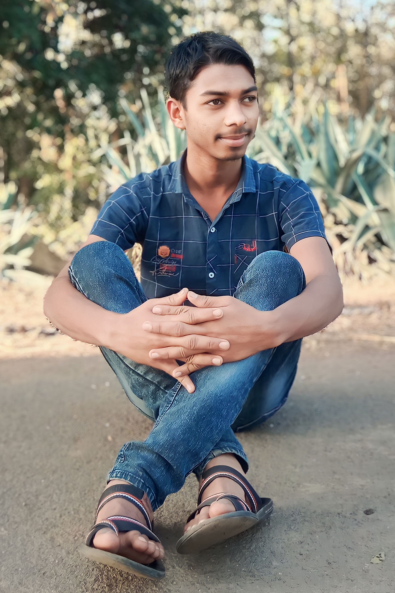
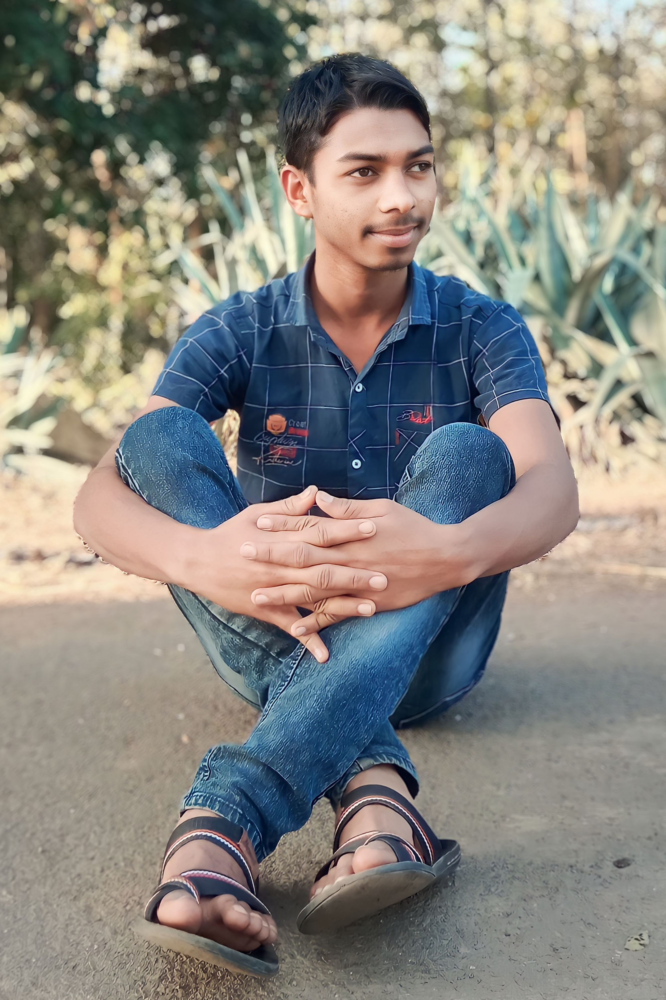

Hy Namrata
Baagwan ki gulab ki dosti thi ✯
Matalab kisi nayaab se dosti thi.......✿
Sabke hisaab se hamme pyar tha ✯
Bas uske hisab se dosti thi........✿
Mai duniyadari ki baatein Karta 🌍
Uski bas kitaab se dosti thi......
Mana ki hambad se baat nahi karte
Par yeh maano matlab se baat nahi karte
Yein naram lehezaa pyaari batein tere liye hai
Ham is lehezee me sabse baat nahi karte haiÂ